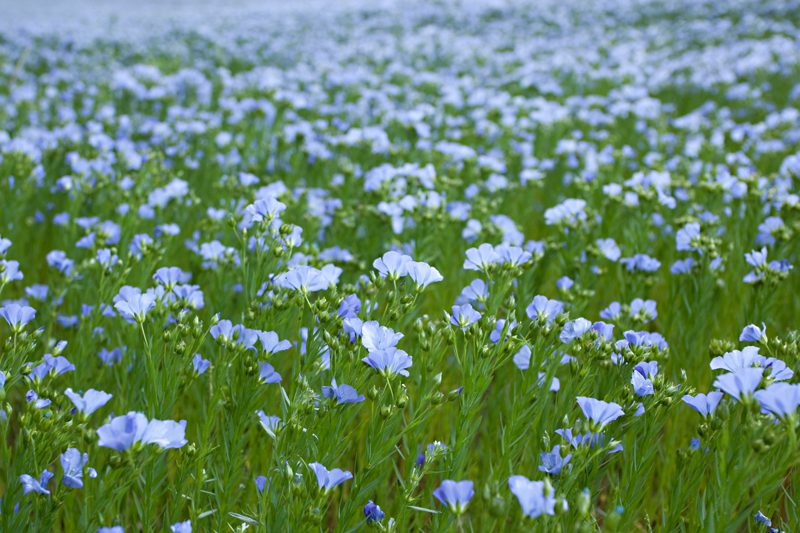
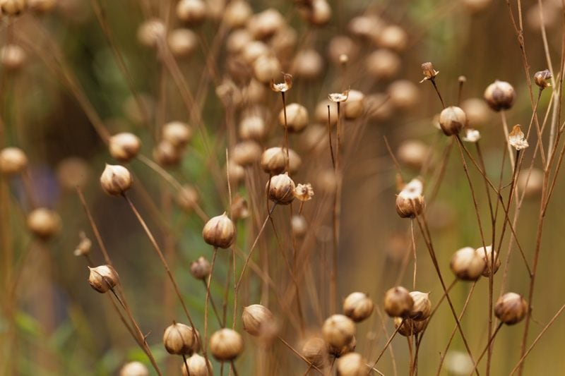

Flax Seeds – Nothing but Blue Prairies
I am sure by now that you have heard of flax seed (also known as linseed). If you have dabbled with raw foods, you are bound to have run into them as you scan through recipes, especially on my site. I do use them quite often. I use them for nutrients and their bulking and binding properties that they have. BUT, I can’t recall if I have ever really wondered where they came from, other than the grocery store. It was time to dig in and learn a little bit about this itty-bitty-majestic-seed!

The life of a flax flower is short-lived… a flower lasts less than one day. But on the bright side, each plant makes dozens of flowers for three to four weeks. Then seedpods swell to the size of a pea and turn from green to gold as the seeds inside ripen, and the plants dry out and die.
How Does it Grow?
Flax is generally only grown in North Dakota and Minnesota, but traditionally it was grown in far more areas of the United States. In fact, anyone with a green thumb can grow their own flax except for those who live in REALLY hot weather since it grows best in a temperate climate with moderate rainfall.
First off, flax seeds are cultivated for either fiber or for the seeds. A farmer has to choose what he/she is wanting to harvest; one can’t harvest it for both purposes due to the timing of how things mature. The fibers extracted from the stem are used in the manufacture of linen. They are smooth, straight, and three times stronger than cotton fibers. They are also used in the paper industry for the manufacturing of paper for cigarettes, tea bags, and banknotes.
If cultivated for the seeds, they can be pressed to make flaxseed oil, which is used in the industry of paints, varnishes, and printing inks. Leftovers of seed (after oil extraction) are used as animal feed. But let’s get back to the culinary side of things because using flax oil is something that we can and should use in our recipes. It is very rich in a type of fat called alpha-linolenic acid (ALA), an omega-3 fatty acid that is good for the heart and found in certain plants.
Flax is typically grown like a grain crop, in plots of many plants crowded close together. Each plant makes one or more slender, erect stems about three feet tall, scattered with narrow, pale green leaves about one inch long. The stems branch near the top to bear blue or white round, half-inch-wide flowers with five petals.

After blooming, the seed pods swell and turn brown. Each pod holds six to ten flax seeds which with either be brown, golden, or yellow.
Thresh Flax Seeds
If you decide to grow your own or are just curious how one harvests their home-grown flax seeds… it starts by pulling handfuls of flax stems out of the ground when the pods turn brown. Once you have large bundles, tie some twine around the stems and hang the bundles in a warm place with good air circulation.
After a few weeks, when the stalks are stiff and dry, you can thresh out the seeds. The idea is to crush the pods so the seeds are released. Slide a pillowcase over the top end of a bundle, tie the case securely around the stems, and then set it down on a paved driveway. You can either pound on the pods with a hammer or rolling pin, OR you can drive back and forth over it with a car. Be creative and have fun.
With the pods now crushed, give the stems a good shake to knock out all the seeds. Pour the seeds into a colander to separate the bits of stems and broken pods from the seeds. The holes in the colander should be just big enough to allow the seeds to slip through. You have to admit that the whole harvesting process sounds a bit fun and perhaps even therapeutic.
Raw Food Recipe Application
- Flaxseeds have many jobs when it comes to using them in recipes.
- Since the swell and create a thick gelatinous texture when soaked in water, they are the perfect binder for breads, crackers, cookies, and bars.
- You can a tablespoon to your smoothie for added nutrients and to help give it a creamy thicker texture.
- They can be ground to a flour-like texture.
- If used whole, they must be activated by soaking in water.
- If they are used ground, you don’t need to activate them.
© AmieSue.com